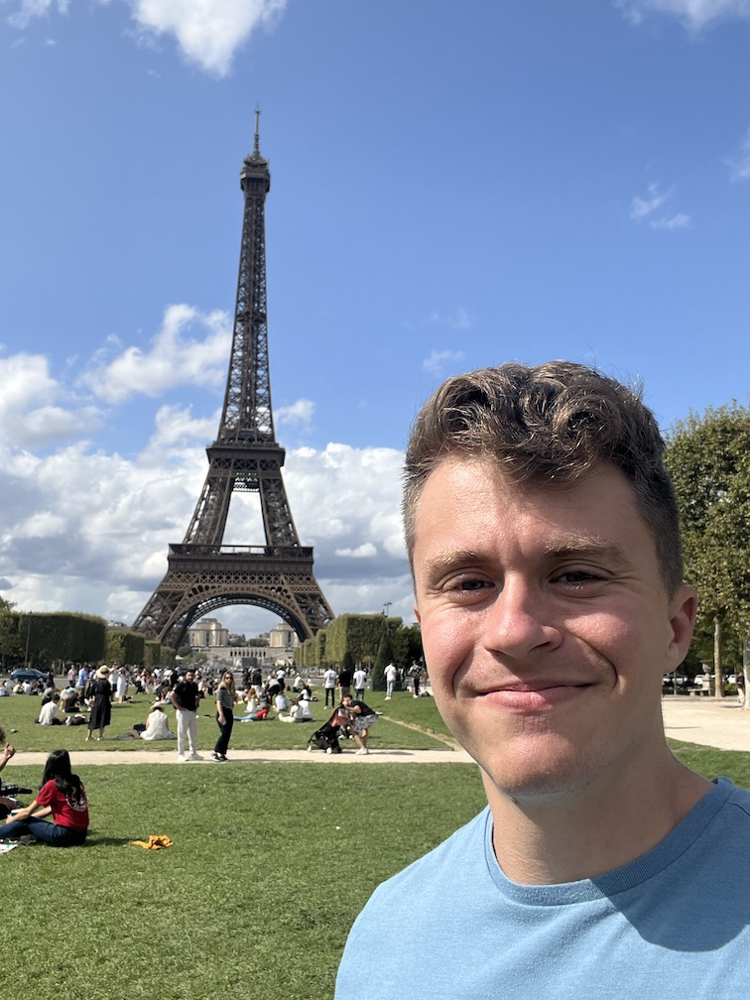

France-Belgium-Germany-Switzerland-France trip report from 26 August - 03 September 2023.
(Yes, that subtitle is a play on the Kanye-Jay-Z song.)
My worst fears were realized soon into the flight: there was no video entertainment. I was going have to... *gasp* read! Soon after this realization I prepared for the first-ever riot at 30,000 ft in the air, checking if I could use my seatmates as human protection. But there was no riot, and I had luckily downloaded David Foster Wallace's Shipping Out (part of A Supposedly Fun Thing I'll Never Do Again). So I read, and tried to sleep, and read some more, and tried to sleep some more until the overhead lights simulated sunrise and I realized we had entered France.
The area surrounding Paris is almost entirely farmland with small villages dotted throughout, connected by either a paved or gravel road (duh) and with a handful of actual homes on the outside. It was the French village I had pictured in my mind up until that moment and generally held true for up until my last few days.
I arrived in Paris proper via the metro, finding a coincidence of epic proportions: my brother, sister-in-law, and friend, E, with whom I was traveling, were all in the same train station—brother/SIL and friend didn't even know about it! The odds of being in the same continent-country-city-station at the same time on the same Saturday morning is vanishingly small, and yet it happened without planning (although I did know brother/SIL were leaving from there that day and E did not).
E and I walked the 15 minutes to our hotel and found it was exactly what we needed: one queen bed inside a small bedroom with a bathroom. The bare essentials and nothing more. We unloaded, changed, and were off to explore the City of Love (as friends). Notre Dame was as expansive as it was intricate, the Eiffel Tower as beautiful as it was looming, the Louvre as angular as it was crowded. The atmosphere was one of happiness, style, and haughtiness (which, in fairness, is probably well-deserved). We experienced no rudeness like I was warned about from multiple people, only blank stares from passerby and broken English from restaurant waiters.
It was a wonderful, exhausting introduction to the city.
We slept for close to 12 hours after I completely turned off my alarm three separate times—jet lag was real! We snagged a breakfast of ham, scrambled eggs, cheese, bread, crepes, coffee, and fresh orange juice at a nearby cafe before continuing deeper into the city towards our train station.
Our first stop was Centre Pompidou, a massive industrial-looking building housing Europe's largest modern art museum. We then toured 59 Rivoli, a five-floor building with multiple active artist studios on each, ranging from modern paintings to landscapes to physical sculptures. We hung out on the lawn near the train station before catching it to Versailles.
The palace was insane. The interior was as extravagant as extravagant comes: so much gold plating, Michelangelo-style paintings covering ceilings, the list goes on. Decadence at its finest. But the gardens are what I enjoyed more. Sprawling across 2,000 acres behind the palace itself, they were meticulously maintained and beautifully planned. No weed was ever seen, no blade of grass seemed to be taller than another, no leaf left sticking out from a shrub. It was the perfect place to walk around just think, an intellectual's paradise where they can develop their thoughts uninterrupted, helped by the serenity and fresh air. We got trapped under a tree while it rained and enjoyed the light pitter-patter of the drops hitting the ground.
On the train home I was almost arrested. Just kidding, but I did learn there is a 60€ fine for putting your foot on a train seat. Now, I am definitely in the wrong and agree with the fine, but let me explain my actions before you, the anonymous reader who I'll probably never meet, thinks of me as a bad person. The bottom of my shoes were clean (from a dirt perspective) after walking on the wet Versailles pavement and dry from sitting on the train, so I put one on the plastic part of the opposite seat for rest purposes without really thinking about what I was doing. The metro police kindly spoke to me and after realizing I was an ignorant tourist, showed mercy. Thank you, random police officers.
My dinner consisted of two dry martinis, popcorn (apparently this is a regular thing they bring out before meals??), grilled bass and vegetables, bread, tiramisu, and a cigarette, just to say we did because that's what people do in Paris.
Both E and I weren't wowed by Brussels. Our introduction immediately after getting off the train was copious amounts of litter, graffiti, and construction, followed by 15 minutes of walking through an area we later learned was not the best safety-wise, and I could definitely see how. The city did not feel special in any particular way like all of the other cities I went to did.
Our first meal consisted of two Belgian staples: mussels (moules) and beef and beer stew. We quickly discovered how much of a staple french fries are in the Belgian cuisine: each dish came with a heaping serving of fries!
In the restaurant we noticed a statue of a little boy peeing, thinking nothing of it besides a strange decoration. But on our directionless walk, there was a store offering even smaller statues, all in different colors and designs. This merited an investigation. Manneken Pis was the first search result and gave us all the explanation we needed. (I highly recommend reading the extremely entertaining Wikipedia article.) Manneken Pis even has a sister and family dog!
E's friend, with whom we were staying with in Zurich, asked us to bring some Cantillon beer for him to enjoy. And when you're getting a free place to stay in Zurich, the third-highest cost-of-living city in the world, you get the man some freakin' beer, and lots of it (or at least as much as possible before the luggage gets too full or you're illegally trafficking beer between European countries, both of which we did not do...)!
The self-guided tour was pretty cool. They specialize in lambic beer:
a type of beer brewed in the Pajottenland region of Belgium southwest of Brussels and in Brussels itself since the 13th century
it is fermented through exposure to wild yeasts and bacteria native to the Zenne valley, as opposed to exposure to carefully cultivated strains of brewer's yeast. This process gives the beer its distinctive flavour: dry, vinous, and cidery, often with a tart aftertaste.
Did I enjoy the beer? Yes. Am I glad I went? Yes. Would it be my first choice given a Hefeweizen? Absolutely not. #sorrynotsorry.
Dinner was at the Reddit-approved Fin de Siecle, where I gave the waitress a request she has obviously never gotten before: "give me your best dish", I asked. She was taken aback, then I asked if there was any food I didn't like, to which I replied no. She came back 20 minutes later with what I correctly guessed as rabbit thigh marinated in a beer- and cherry-based sauce. Delicious! Toss in two dark beers and a chocolate cake to get a bomb dinner. If you're ever in Brussels, definitely make it a point to go here. Super friendly staff, great atmosphere, and superb food and drink.
We headed straight back to the hotel to unwind for the rest of the night; saying we were exhausted would be an understatement.
Our originally-direct-to-Frankfurt train got cancelled halfway through the ride due to vandalism on the track. What monster vandalizes a train track?! Sheeit. E asked a steward and they explained that we should hop on a train going through the Frankfurt airport station (as opposed to the main station, our original destination). While we lost two hours, it was an easy switch and ride.
Frankfurt was pretty damn cool. A cross between a village and modern city with skyscrapers, it reminded both E and I of a water park we frequented in our childhoods, evoking nostalgia that I'm certain contributed to how much I enjoyed the city. We walked aimlessly for a few hours—a grocery store for chocolate and cough drops, a park, a row of nice homes—before finagling our unreserved asses into dinner at Apfelwein-Wirtschaft Fichtekränzi, where we got apfelwein and myself a schnitzel with Frankfurt's famous green sauce and roasted potatoes. A patisserie was in order afterwards because hey, dessert is the most important part of every meal, so I followed my nose to a Japanese place for a mini cat with an edible cat figurine on top.
It was time to catch some zzzs back at the hotel and prepare for the morrow.
We snagged coffee and breakfast at a quaint cafe in the south of Frankfurt before catching our train to Basel, and finally Zurich.
Here's some word vomit as I attempt to describe Zurich and its atmosphere: slightly larger Colorado mountain town; hella designer shops with brand names (e.g., Patek Phillipe) I had only heard of on the internet and didn't think actually exists in brick-and-mortar form; seemingly wealthy people walking around all over the place (or maybe that was just me knowing they are there in Zurich and thus probably wealthy, or them flexin' on us as tourists because when you're in Zurich, you flex (except for us, we we're definitely not flexin' in our already-worn-once-or-maybe-twice clothes)); everybody was very kind—some dude noticed we were slightly lost in the train station and offered very kindly to help; everybody spoke perfect English, no grammar or pronunciation issues (despite a small accent, but that's to be expected); very clean with no graffiti (that I can remember) nor litter; very proud of their country based on a few things including the gross amount of flags hanging from homes (but none flying proudly from lifted pickup trucks, so America, and especially Texas, still have them beat there), which is a perfect segue into a story D, E's friend who lives there, told us about when he stepped off the plane for the first time from the U.S.:
Customs Officer (CO): How long will you be staying?
D: I don't know yet. We'll see how I like it.
CO (with a very serious face): Some people say the U.S. is the best country in the world. They are wrong. Switzerland is the best country in the world.
So of course I had to see if there was some sort of patriotism index for countries. The best I found was this, where 41% of U.S. respondents said they believed their country is the best in the world, the highest of the other 18. There was also this, but Switzerland isn't included. Damn. I'll just take that CO for his word because Switzerland was pretty freakin' awesome.
We trained down to Zug, supposedly one of the weather "suburbs" (really a town) of Zurich, where D met us at a bar. And what a bar it was. Quiet and dimly lit with a healthy selection of signature cocktails and beers, it overlooked the lake. I learned that if there's any doubt as to where the bathroom is, it's downstairs.
After a few beers and a "possibly salty" Gimlet, a new bar was in order. E is a massive jazz and general music fan, so D took us just down the street to Zug's only jazz bar where live music was supposed to be playing. Instead, we walked in on three friendly people, one of whom was the owner, who warmly welcomed us into the bar after explaining there was no way we were sleeping there. An espresso martini and spicy something or other were drunk by each before Ubering back to D's place for a glass of the Cantillon beer and some hay hittin'.
Some more bullet points about Zurich/Zug:
Have I mentioned how different some systems are in Europe vs. the U.S.? (Disclaimer: I may be an idiot, but I was also exhausted.) First, the door. My god the freaking door. The knob doesn't turn—it's strictly for pushing and pulling. Instead, the key does the full unlocking sequence. And the lock to my place got stuck. It wouldn't turn all the way. I pushed and pulled on the knob and turned the lock to every different position possible—one turn, two turns, three turns, both counter- and regular clockwise—no dice! Finally, I had to pull the door hard and turn the key just a bit more. Second, the windows. They have this weird, albeit cool, window that can crack open at the top or swing out. How the heck they do this I do not know. And that is exactly the problem. I spent 20 minutes finagling this gosh darn window to close—I watched a YouTube video, I pulled out a tape measure and protractor (just kidding, but I was getting to that point), I pleaded kindly for it to close so I could go to sleep. I finally got it by the method of god-knows-what. Third, the hot water system. The hot water tank didn't fill up automatically, so I had to play around to get it to fill. What the heckkkkkkkk.
Besides those learning curves, the first day in Lyon was fine. I was exhausted from the train ride and staying up until 2:00am the night before, so I had a casual bouchon dinner at Le Garet:
Bouchon is a type of restaurant found in Lyon, France, that serves traditional Lyonnaise cuisine, such as sausages, coq-au-vin, "salade lyonnaise" duck pâté or roast pork. Compared to other forms of French cooking such as nouvelle cuisine, the dishes are quite hearty. There are approximately twenty officially certified traditional bouchons, but a larger number of establishments describe themselves using the term.
Typically, the emphasis in a bouchon is not on haute cuisine but, rather, a convivial atmosphere and a personal relationship with the owner.
You've never had flan until you've had the pistachio flan from Boulangerie Du Palais. If someone claims they have had better but have not been here, their opinion is completely invalid and they should be told such in a rude, condescending manner. This stuff was freakin' amazing. I ate it while overlooking the city and my goodness was the steep climb and spilling coffee on my all-white, untainted sneakers worth it.
Today was a day of following Atlas Obscura's Lyon list. I hit the Roman coliseum, the traboules, Curiosities Garden, and Les Mur de Canuts. Each site had quite a bit of walking between it, so I of course replenished my energy reserves with more flan (hey, I'm on vacation!). The city itself was beautiful. It was not a systematically-designed-and-built layout, but rather a seemingly random assortment of roads and side streets and alleys. Sidewalks lined all the streets to promote walking—it's no wonder French people are so thin! Cafes and restaurants were filled with people enjoying the uninterrupted sun and warm weather.
I'm tired as heck at this point. I just want to go back to my home and sleep in my bed. You can even see it on how each day of this report is getting shorter. But I must push on. I must get my money's worth!
First up on the penultimate day was a Lyon food tour. We had a cheese/wine sampler, bouchon, a multitude of different sausages, ice cream, and finally coffee with a small cake slice. All of it was delicious, homemade, and well-explained.
I took the TGV to Paris and met up with the ACX Paris group (if you know you know) for a few hours of conversation.
Breakfast at Woody’s; flan; train to CDG; sat at gate for three hours; movies: Ford vs. Ferrari, Man of Steel, Spider-Man: Far From Home, I Know What You Did Last Summer, Knock at the Cabin; rerouted to another airport because of weather; home.

Everybody was incredibly friendly. I met no French people who were even close to rude, despite the purported stereotype explained to me by a former African-born Parisian and German.
Learning some French would definitely be helpful for navigating France. English was sufficient for Belgium, Germany, and Switzerland.
Why are Europeans so much thinner? Before reading the SMTM piece, my culprits are (in no particular order): more walking; smaller portion sizes; a culture less accepting of more eating; a culture that has less-abundance mindset than the U.S.; and less sugar (possibly? I've heard people say European food is generally less sweet than the American counterpart, but didn't notice nor attempt to notice this while I was over there).
Both men and women are prettier, and I don't attribute this solely to the weight differences.
Carhartt seemed like a super popular brand over there. I saw way more jackets than I do in the States.